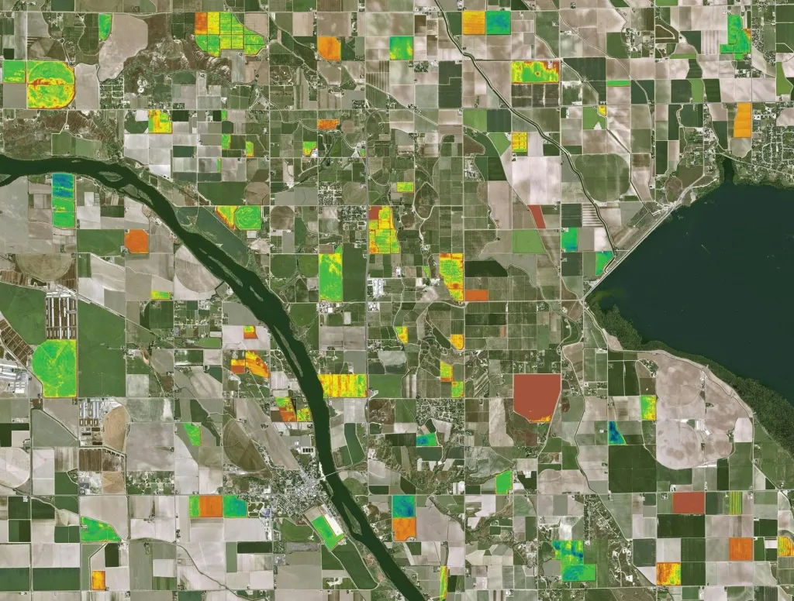
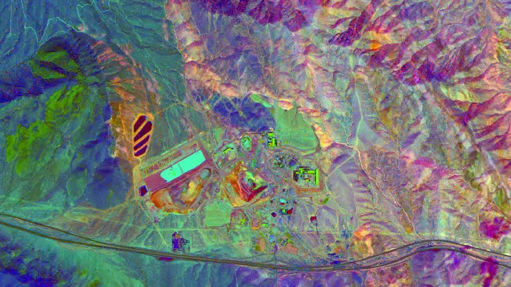
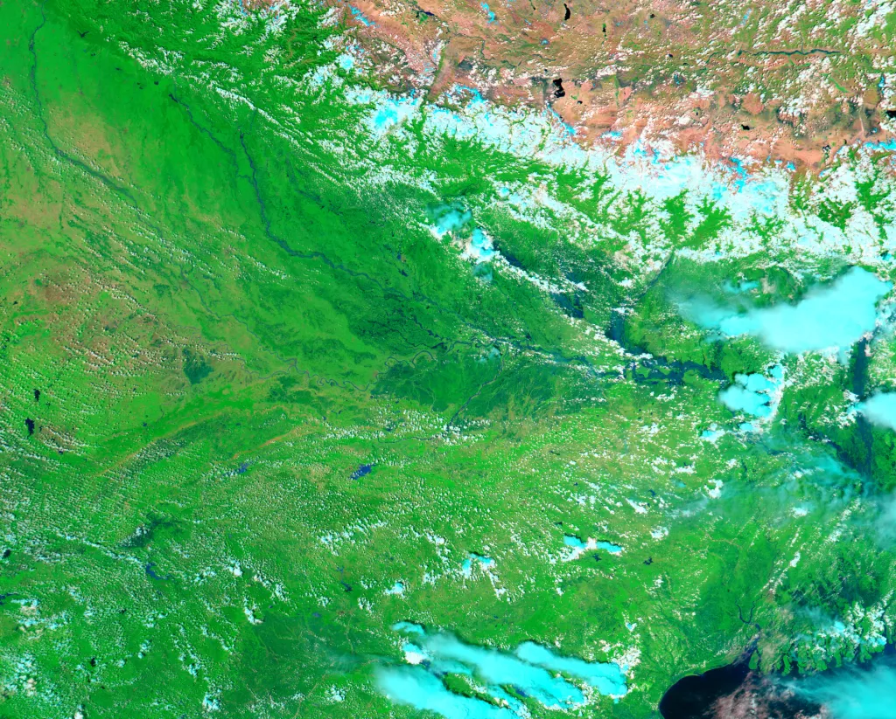
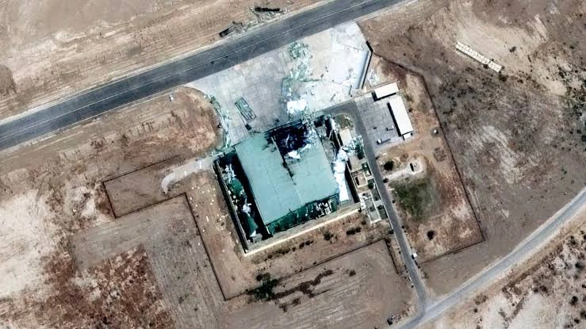

Remote sensing is how we study the Earth without touching it. This chapter lays the groundwork for Track A: what remote sensing is, the six-component process behind every satellite image, the real-world problems it is used to solve, and what it can and can't do.
Remote sensing is the science of collecting information about an object, area, or phenomenon without physically touching it. It collects information by detecting and measuring electromagnetic energy reflected, emitted, or scattered by objects using sensors mounted on satellites, aircraft, drones, or other platforms.
A satellite takes an image of a forest from space. By studying the image, scientists can estimate forest cover without visiting every part of the forest.
This space is reserved for the chapter animation: a walkthrough of the six-component process described below. It will be added here once provided.
Supplies electromagnetic energy. The Sun is the main source for most optical satellite images.
Radiation passes through gases, aerosols, and clouds that may scatter or absorb it.
Earth's surface absorbs, reflects, transmits, or emits energy.
Measures the energy coming from the target.
Measurements are converted into digital data, corrected, and processed into images.
Analysts identify features and extract useful information.
Because physical access is often impossible, dangerous, expensive, or simply too slow. You can't walk every square kilometre of the Amazon to track deforestation, or send a person into a cyclone to map flood extent — but a satellite passes over the whole planet every few days.
Remote sensing is used across environmental science, engineering, agriculture, and public planning.

Farmland from orbit. Differences in colour and vigour between fields are the starting point for crop-type mapping and growth monitoring.

A colour-enhanced view of a mineral exploration area — such composites help map rock types, alteration zones and structures.

Water and wet ground stand out sharply in this composite — the kind of view used to map flood extent and assess storm damage.

High spatial detail of a specific site — the level of imagery used for intelligence gathering, damage assessment and surveillance.
Other applications include geology, forestry, weather forecasting, glaciology, oceanography, archaeology, and urban planning.
Remote sensing begins with energy. To understand why different surfaces look different, the next concept is electromagnetic radiation and its wavelengths. Continue to RS.1 — What Is Remote Sensing? →